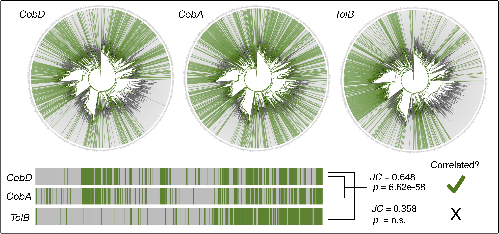

Overview
Phylocorrelate is a tool that detects pairs of gene/protein families with similar phylogenetic distributions across the bacterial tree of life. The database contains pre-computed phylogenomic correlations for 27,372 gene families across 28,315 species. PhyloCorrelate uses the GTDB bacterial tree and gene occurrences from AnnoTree including entries from KEGG, PFAM, and TIGRFAM.
Gene co-occurrence is important to detect as it may suggest an interaction between the genes, membership in the same pathway or complex, or more general functional associations or dependencies.
Explore phylogenomic correlations for existing genes/proteins of interest, or submit new genes for co-occurrence analysis.
How does it work?
PhyloCorrelate detects pairs of gene/protein families with similar phylogenetic distributions across the bacterial tree of life. To find genes with similar distributions to a query gene (e.g., cobD below), first we examine the presence/absence distribution of the query gene across the tree. We then examine the distributions of all other genes and calculate their similarity using several metrics, including the Jaccard overlap coefficient (JC) and hypergeometric p-value statistic. The genes with the highest JC scores will be the top candidate correlation partners.
But it isn’t quite so simple. PhyloCorrelate also implements a phylogenetic correction to ensure that co-occurrence patterns are statistically significant given the topology of the tree. This helps to remove apparent correlations that occur only because gene A and B happen to be conserved within the same lineages.

Team
- Benjamin J.-M. Tremblay: Lead developer and bioinformatics technician
- Briallen Lobb: Case studies and tool design
- Andrew C. Doxey: PI and team supervision
Cite us
If you use PhyloCorrelate in a manuscript, please cite the following:
- Tremblay et al. (2021) PhyloCorrelate: inferring bacterial gene-gene functional associations through large-scale phylogenetic profiling. Bioinformatics, https://doi.org/10.1093/bioinformatics/btaa1105.
- Mendler et al. (2019) AnnoTree: visualization and exploration of a functionally annotated microbial tree of life. Nucleic Acids Research, Volume 47, Issue 9, 21 May 2019, Pages 4442-4448, https://doi.org/10.1093/nar/gkz246
Source code/data
The source code for the PhyloCorrelate R shiny app is available at https://github.com/doxeylab/phylocorrelate. A standalone R package implementation is also available at https://github.com/bjmt/phylocorrpkg.